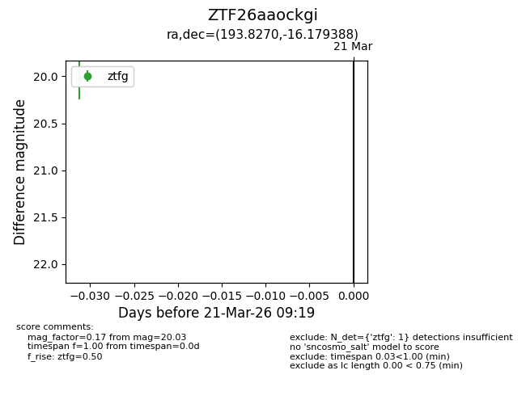
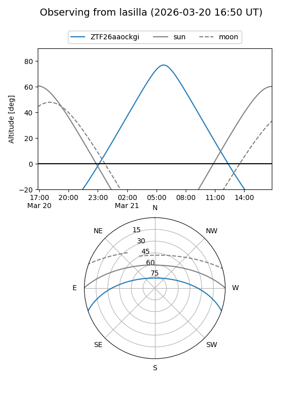
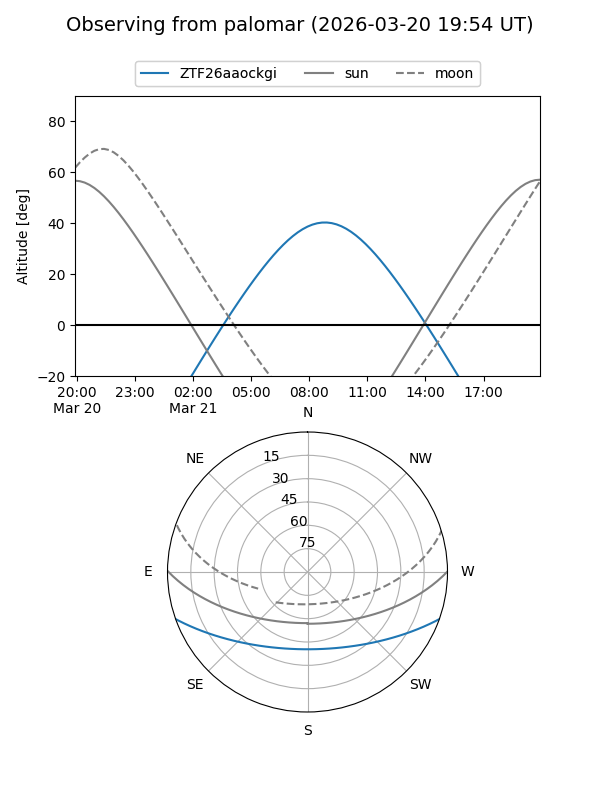

ZTF26aaockgi
Target ZTF26aaockgi at 2026-03-21 09:21
Aliases and brokers:
FINK: link
Lasair: link
ALeRCE: link
alt names
ZTF26aaockgi (ztf,fink_ztf)
Coordinates:
equatorial (ra, dec) = 193.8270,-16.17939
equatorial (HMS+DMS) = 12:55:18.48,-16:10:45.80
galactic (l, b) = (304.2864,+46.68218)
Flags:
Photometry:
last ztfg=20.03
1 ztfg detections
Lightcurve

Visibility


Additional plots